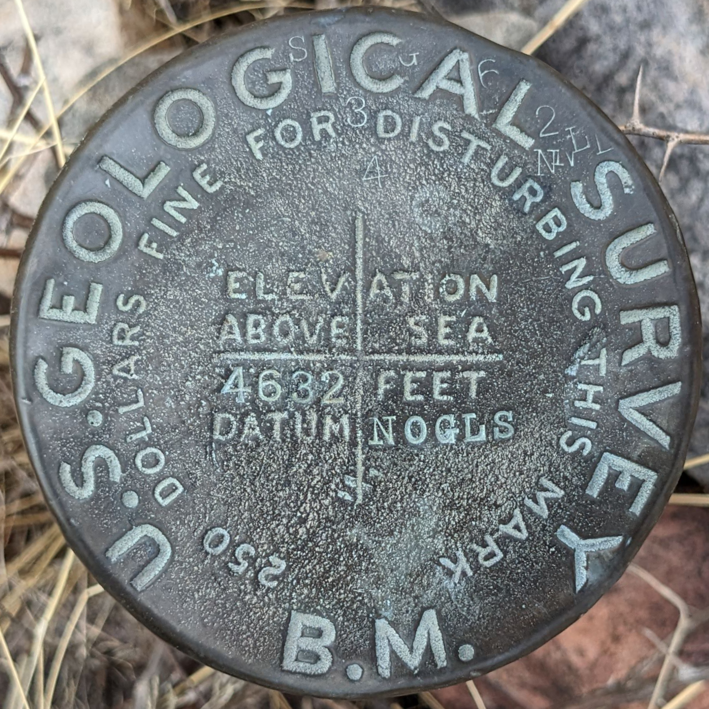
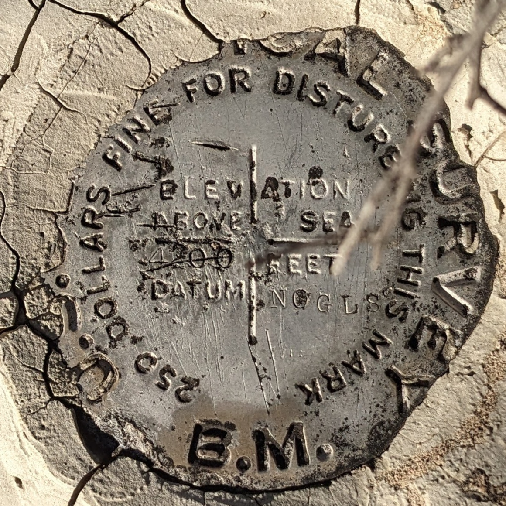

What's a NOGLS? A datum?
Essentially, a datum is a connected set all based off of each other. In the case of USGS vertical alignment datums, it is a string of points with elevations. Many points were surved not on disks. For example, chiseled squares in rock, the top of railroad rails, and more. In most cases though, datums consisted of only permanent disks. That is the case with the NOGLS datum.
NOGLS is simply a simplification of "Nogales", a Mexican border city. The datum is more centered around Tucson but for some reason Nogales was chosen.
M. S. Bright was the leader of the surveyor party that established the NOGLS datum. They traveled in carriages on horseback with their surveying equipment. They traveled likely about 500 miles just establishing the datum from 1903 to 1905, adding up to about 2 years of work. M. S. Bright established datums all across the southwestern United States.
The first NOGLS disk was placed in Red Rock, Pinal County next to the Red Rock railroad station which is long gone. From there the datum follows many railroads (many now just railroad grades) along with a few spurs out along old roads. The vast majority of the datum is in Pima County but some portions exist in Santa Cruz County.

© OpenStreetMap contributors, Map data licensed under ODBL.
The highlighted paths are the routes at which benchmarks in the NOGLS datum followed.
Some of the benchmarks I have found on the datum are listed below.

NOGLS 2573
"NOGLS 2573" is a benchmark monumented by the USGS in 1904 located in Pima County, Arizona.
Datasheet (on trunk line 4 of page 2)

NOGLS 4534
"NOGLS 4534" is a benchmark monumented by the USGS in 1903 or 1904 located in Pima County, Arizona.
Datasheet (on pdf page 25, document page 24)

NOGLS 2835 - CZ0122
"NOGLS 2835" is a benchmark monumented by the USGS in 1904 located in Pima County, Arizona.
Datasheet (on trunk line 4 of page 2)

NOGLS 4835
"NOGLS 4835" is a benchmark monumented by the USGS in 1903 or 1904 located in Pima County, Arizona.
Datasheet (on pdf page 25, document page 24)

NOGLS 3290
"NOGLS 3290" is a benchmark monumented by the USGS in 1903 or 1904 located in Pima County, Arizona.
Datasheet (on pdf page 5)
Old Datasheet (on pdf page 25, document page 24)

NOGLS 1899 - CZ0360
"NOGLS 1899" is a benchmark monumented by the USGS in 1903 located in Pima County, Arizona.
Datasheet (on pdf page 11)
Old Datasheet (on pdf page 12, document page 11)
Benchmark Description Photographs

NOGLS 1940 - CZ0374
"NOGLS 1940" is a benchmark monumented by the USGS in 1903 located in Pima County, Arizona.
Datasheet (on pdf page 11)
Old Datasheet (on pdf page 12, document page 11)
Benchmark Description Photographs

NOGLS 3653
"NOGLS 3653" is a benchmark monumented by the USGS in 1903 located in Pinal County, Arizona.
Datasheet (on pdf page 19, document page 18)

NOGLS 4997 - CG1001
"NOGLS 4997" is a benchmark monumented by the USGS in 1903 located in Santa Cruz County, Arizona. It had two reference marks and an azimuth mark. Only one reference mark is still present.
Datasheet (on pdf page 29, document page 28)

NOGLS 4653
"NOGLS 4653" is a benchmark monumented by the USGS in 1903 or 1904 located in Santa Cruz County, Arizona.
Datasheet (on pdf page 28, document page 27)

NOGLS 5442
"NOGLS 5442" is a benchmark monumented by the USGS in 1903 or 1904 located in Santa Cruz County, Arizona.
Datasheet (on pdf page 29, document page 28)

NOGLS 5496
"NOGLS 5496" is a benchmark monumented by the USGS in 1903 or 1904 located in Santa Cruz County, Arizona.
Datasheet (on pdf page 28, document page 27)

NOGLS 4772
"NOGLS 4772" is a benchmark monumented by the USGS in 1903 or 1904 located in Santa Cruz County, Arizona.
Datasheet (on pdf page 28, document page 27)

NOGLS 3531
"NOGLS 3531" is a benchmark monumented by the USGS in 1903 located in Pinal County, Arizona.
Datasheet (on pdf page 25, document page 24)

NOGLS 3721
"NOGLS 3531" is a benchmark monumented by the USGS in 1903 or 1904 located in Pima County, Arizona.
Datasheet (on pdf page 24, document page 23)

NOGLS 3969
"NOGLS 3969" is a benchmark monumented by the USGS in 1903 or 1904 located in Pima County, Arizona.
Datasheet (on pdf page 24, document page 23)

NOGLS 3891
"NOGLS 3891" is a benchmark monumented by the USGS in 1903 or 1904 located in Santa Cruz County, Arizona.
Datasheet (on pdf page 26, document page 25)

NOGLS 3140
"NOGLS 3140" is a benchmark monumented by the USGS in 1903 or 1904 located in Santa Cruz County, Arizona.
Datasheet (on pdf page 27, document page 26)

NOGLS 4632
"NOGLS 4632" is a benchmark monumented by the USGS in 1903 or 1904 located in Pima County, Arizona.
Datasheet (on pdf page 26, document page 25)

NOGLS 4040
"NOGLS 4040" is a benchmark monumented by the USGS in 1904 located in Pinal County, Arizona.
Datasheet (on pdf page 18, document page 18)

NOGLS 4503 RESET - CC8280
"NOGLS 4503 RESET" is a benchmark monumented by the USGS in 1946 located in Pinal County, Arizona. It is a non deticated reference mark for SOTOL.

NOGLS 2596 RESET
"NOGLS 2596 RESET" is a benchmark monumented by the USGS on or within the year of September 4, 1974 located in Pima County, Arizona.
Datasheet (on pdf page 11)

NOGLS 4200 - CG0163
"NOGLS 4200" is a benchmark monumented by the USGS in 1903 located in Cochise County, Arizona.
Old Datasheet (on pdf page 30, document page 29)

NOGLS 4526 - CG0166
"NOGLS 4526" is a benchmark monumented by the USGS in 1903 located in Cochise County, Arizona.
Old Datasheet (on pdf page 30, document page 29)